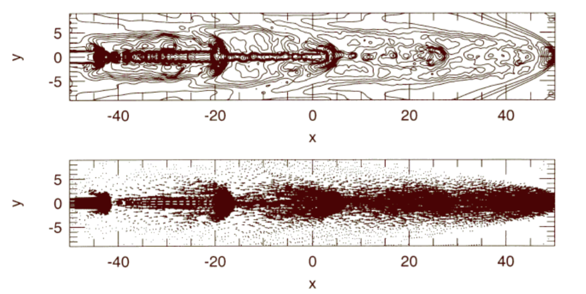
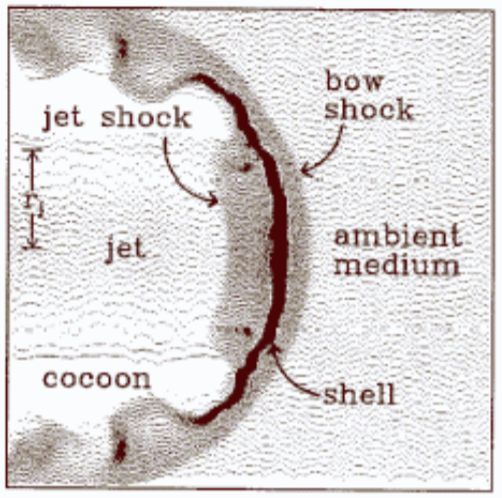

Jet Structure and Formation
Before diving into the velocity calculations of the jet, let's define a few terms. After a thorough reading of
Elisebete M de Gouveia Dal Pino's wonderful research on Astrophysical Jets and Outflows2, I found that her focus
was on the structure and composition of an astrophysical jet, along with the ambient medium that it crashes through. As the jet is released
from the grip of the body's gravity, it fires along the rotational axis of the body. The method by which it does this is mostly unknown3. It
most likely has to do with the magnetohydrodynamic structure of the disk. After firing, it will proceed to cool radiatively, and slow down
through the collision with these ambient clouds. The clouds of gas that it runs through will be injected with angular momentum.
As the jet collides with the gas cloud, debris is kicked up from the fast jet particles smacking against the relatively inert gas particles.
This structure is called the bow shock. These bright knots formed by this collision are much more common in jets formed by active galactic
nuclei (AGNs), which usually are concentrated at a central black hole. Young star objects (YSOs) move slowly compared to AGN jets, so they often create
fewer bow shocks. Their total angular momentum is smaller than AGN jets, so it is completely dispersed after just a few collisions.
Finally, time for the equation! This relates bow shock velocity to actual jet velocity.
$$ v_{bs} \approx v_j \frac 1 {1 + {(\eta\alpha)}^{-1/2}} $$
The two variables at the bottom, $ \eta $ (eta) and $ \alpha $ (alpha) are defined as follows:
$$ \eta = \frac {n_j} {n_a} $$
where $ \frac {n_j} {n_a} $ is the ratio of the number density of the jet to ambient gas.
$$ \alpha = (\frac {R_j} {R_h})^2 $$
where $ R_j $ is the radius of the jet beam, and $ R_h $ the radius of the jet head.
From this, we can see a few relations. For a moment, let's take $ \eta = 1 $, so we can look at the how $ v_{bs} $ changes with $ \alpha $.
If $ R_j = R_h $ (meaning the jet is not conic at all, but rather a cylinder), then the bow shock will move at approximately half the velocity of the jet.
As $ R_h $ grows, the jet will become more conic, with the narrow point at the source of the jet (the black hole in our AGN case).
As this happens, $ (\eta\alpha) \to 0 $ and thus $ (\eta\alpha)^{-1/2} \to \infty $. We can see now that as the jet is more conic, the bow shock will be
much slower than the jet impacting the ambient cloud.
Another neat relation is between the density of the ambient gas and density of the jet. If we assume a cylindrical jet ($\alpha = 1$), then
as $\frac {n_j} {n_a} \to 0$ (the ambient gas is much denser than the jet), then $v_{bs} \to 0$. If the jet is much more dense than the cloud
($\frac {n_j} {n_a} \to \infty$), then $v_{bs} \to \infty$!
This isn't exactly right, need to check my work here.

[Figure 2] Density contour and velocity distribution for radiative cooling, pulsed jet. Source: Gouveia Dal Pino 2001

[Figure 3] Structure of jet head plowing into ambient gas. Source: Blondin, Konigl, and Fryxell 1989